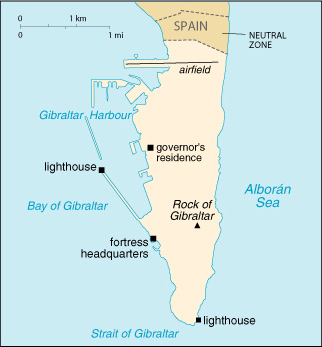

(overseas territory of the UK)

|
Gibraltar (overseas territory of the UK) |
|
| Introduction Geography People Government Economy Communications Transportation Military Transnational Issues | ||
|  | ||
| Gibraltar | Introduction | Top of Page |
| Background: | Strategically important, Gibraltar was ceded to Great Britain by Spain in the 1713 Treaty of Utrecht; the British garrison was formally declared a colony in 1830. In a 1967 referendum, Gibraltarians ignored Spanish pressure and voted overwhelmingly to remain a British dependency. |
| Gibraltar | Geography | Top of Page |
| Location: | Southwestern Europe, bordering the Strait of Gibraltar, which links the Mediterranean Sea and the North Atlantic Ocean, on the southern coast of Spain |
| Geographic coordinates: | 36 11 N, 5 22 W |
| Map references: | Europe |
| Area: |
total:
6.5 sq km
land: 6.5 sq km water: 0 sq km |
| Area - comparative: | about 11 times the size of The Mall in Washington, DC |
| Land boundaries: |
total:
1.2 km
border countries: Spain 1.2 km |
| Coastline: | 12 km |
| Maritime claims: | territorial sea: 3 NM |
| Climate: | Mediterranean with mild winters and warm summers |
| Terrain: | a narrow coastal lowland borders the Rock of Gibraltar |
| Elevation extremes: |
lowest point:
Mediterranean Sea 0 m
highest point: Rock of Gibraltar 426 m |
| Natural resources: | NEGL |
| Land use: |
arable land:
0%
permanent crops: 0% permanent pastures: 0% forests and woodland: 0% other: 100% (1993 est.) |
| Irrigated land: | NA sq km |
| Natural hazards: | NA |
| Environment - current issues: | limited natural freshwater resources; large concrete or natural rock water catchments collect rainwater |
| Geography - note: | strategic location on Strait of Gibraltar that links the North Atlantic Ocean and Mediterranean Sea |
| Gibraltar | People | Top of Page |
| Population: | 27,649 (July 2001 est.) |
| Age structure: |
0-14 years:
18.73% (male 2,652; female 2,528)
15-64 years: 66.33% (male 9,473; female 8,866) 65 years and over: 14.94% (male 1,733; female 2,397) (2001 est.) |
| Population growth rate: | 0.24% (2001 est.) |
| Birth rate: | 11.25 births/1,000 population (2001 est.) |
| Death rate: | 8.82 deaths/1,000 population (2001 est.) |
| Net migration rate: | NEGL migrant(s)/1,000 population (2001 est.) |
| Sex ratio: |
at birth:
1.05 male(s)/female
under 15 years: 1.05 male(s)/female 15-64 years: 1.07 male(s)/female 65 years and over: 0.72 male(s)/female total population: 1 male(s)/female (2001 est.) |
| Infant mortality rate: | 5.49 deaths/1,000 live births (2001 est.) |
| Life expectancy at birth: |
total population:
79.09 years
male: 76.23 years female: 82.1 years (2001 est.) |
| Total fertility rate: | 1.64 children born/woman (2001 est.) |
| HIV/AIDS - adult prevalence rate: | NA% |
| HIV/AIDS - people living with HIV/AIDS: | NA |
| HIV/AIDS - deaths: | NA |
| Nationality: |
noun:
Gibraltarian(s)
adjective: Gibraltar |
| Ethnic groups: | Spanish, Italian, English, Maltese, Portuguese |
| Religions: | Roman Catholic 76.9%, Church of England 6.9%, Muslim 6.9%, Jewish 2.3%, none or other 7% (1991) |
| Languages: | English (used in schools and for official purposes), Spanish, Italian, Portuguese, Russian |
| Literacy: |
definition:
NA
total population: above 80% male: NA% female: NA% |
| Gibraltar | Government | Top of Page |
| Country name: |
conventional long form:
none
conventional short form: Gibraltar |
| Dependency status: | overseas territory of the UK |
| Government type: | NA |
| Capital: | Gibraltar |
| Administrative divisions: | none (overseas territory of the UK) |
| Independence: | none (overseas territory of the UK) |
| National holiday: | Commonwealth Day, second Monday of March |
| Constitution: | 30 May 1969 |
| Legal system: | English law |
| Suffrage: | 18 years of age; universal, plus other UK subjects who have been residents six months or more |
| Executive branch: |
chief of state:
Queen ELIZABETH II (since 6 February 1952), represented by Governor and Commander-in-Chief David DURIE (since 5 April 2000); note - DURIE was appointed in February 2000 but took office in April 2000
head of government: Chief Minister Peter CARUANA (since 17 May 1996) cabinet: Council of Ministers appointed from among the 15 elected members of the House of Assembly by the governor in consultation with the chief minister; note - there is also a Gibraltar Council that advises the governor elections: none; the monarch is hereditary; governor appointed by the monarch; chief minister appointed by the governor |
| Legislative branch: |
unicameral House of Assembly (18 seats - 15 elected by popular vote, one appointed for the Speaker, and two ex officio members; members serve four-year terms)
elections: last held 10 February 2000 (next to be held NA 2004) election results: percent of vote by party - GSD 58%, GSLP 41%; seats by party - GSD 8, GSLP 7 |
| Judicial branch: | Supreme Court; Court of Appeal |
| Political parties and leaders: | Gibraltar Social Democrats or GSD [Peter CARUANA]; Gibraltar Socialist Labor Party or GSLP [Joseph John BOSSANO] |
| Political pressure groups and leaders: | Chamber of Commerce; Gibraltar Representatives Organization; Housewives Association |
| International organization participation: | Interpol (subbureau) |
| Diplomatic representation in the US: | none (overseas territory of the UK) |
| Diplomatic representation from the US: | none (overseas territory of the UK) |
| Flag description: | two horizontal bands of white (top, double width) and red with a three-towered red castle in the center of the white band; hanging from the castle gate is a gold key centered in the red band |
| Gibraltar | Economy | Top of Page |
| Economy - overview: | Gibraltar benefits from an extensive shipping trade, offshore banking, and its position as an international conference center. The British military presence has been sharply reduced and now contributes about 11% to the local economy. The financial sector accounts for 20% of GDP; tourism (almost 6 million visitors in 1998), shipping services fees, and duties on consumer goods also generate revenue. In recent years, Gibraltar has seen major structural change from a public to a private sector economy, but changes in government spending still have a major impact on the level of employment. |
| GDP: | purchasing power parity - $500 million (1997 est.) |
| GDP - real growth rate: | NA% |
| GDP - per capita: | purchasing power parity - $17,500 (1997 est.) |
| GDP - composition by sector: |
agriculture:
NA%
industry: NA% services: NA% |
| Population below poverty line: | NA% |
| Household income or consumption by percentage share: |
lowest 10%:
NA%
highest 10%: NA% |
| Inflation rate (consumer prices): | 1.5% (1998) |
| Labor force: | 14,800 (including non-Gibraltar laborers) |
| Labor force - by occupation: | services 60%, industry 40%, agriculture NEGL% |
| Unemployment rate: | 13.5% (1996) |
| Budget: |
revenues:
$307 million
expenditures: $284 million, including capital expenditures of $NA (FY00/01 est.) |
| Industries: | tourism, banking and finance, ship-building and repairing; support to large UK naval and air bases; tobacco, mineral water, beer, canned fish |
| Industrial production growth rate: | NA% |
| Electricity - production: | 95 million kWh (1999) |
| Electricity - production by source: |
fossil fuel:
100%
hydro: 0% nuclear: 0% other: 0% (1999) |
| Electricity - consumption: | 88.4 million kWh (1999) |
| Electricity - exports: | 0 kWh (1999) |
| Electricity - imports: | 0 kWh (1999) |
| Agriculture - products: | none |
| Exports: | $81.1 million (f.o.b., 1997) |
| Exports - commodities: | (principally reexports) petroleum 51%, manufactured goods 41%, other 8% |
| Exports - partners: | UK, Morocco, Portugal, Netherlands, Spain, US, Germany |
| Imports: | $492 million (c.i.f., 1997) |
| Imports - commodities: | fuels, manufactured goods, and foodstuffs |
| Imports - partners: | UK, Spain, Japan, Netherlands |
| Debt - external: | $NA |
| Economic aid - recipient: | $NA |
| Currency: | Gibraltar pound (GIP) |
| Currency code: | GIP |
| Exchange rates: | Gibraltar pounds per US dollar - 0.6764 (January 2001), 0.6596 (2000), 0.6180 (1999), 0.6037 (1998), 0.6106 (1997), 0.6403 (1996); note - the Gibraltar pound is at par with the British pound |
| Fiscal year: | 1 July - 30 June |
| Gibraltar | Communications | Top of Page |
| Telephones - main lines in use: | 19,000 (1997) |
| Telephones - mobile cellular: | 1,620 (1997) |
| Telephone system: |
general assessment:
adequate, automatic domestic system and adequate international facilities
domestic: automatic exchange facilities international: radiotelephone; microwave radio relay; satellite earth station - 1 Intelsat (Atlantic Ocean) |
| Radio broadcast stations: | AM 1, FM 5, shortwave 0 (1998) |
| Radios: | 37,000 (1997) |
| Television broadcast stations: | 1 (plus three low-power repeaters) (1997) |
| Televisions: | 10,000 (1997) |
| Internet country code: | .gi |
| Internet Service Providers (ISPs): | 2 (2000) |
| Internet users: | NA |
| Gibraltar | Transportation | Top of Page |
| Railways: | total: NA km; 1.000-m gauge system in dockyard area only |
| Highways: |
total:
46.25 km
paved: 46.25 km unpaved: 0 km (2001) |
| Waterways: | none |
| Pipelines: | 0 km |
| Ports and harbors: | Gibraltar |
| Merchant marine: |
total:
49 ships (1,000 GRT or over) totaling 669,056 GRT/1,003,809 DWT
ships by type: bulk 1, cargo 15, chemical tanker 6, container 7, multi-functional large-load carrier 3, passenger 2, petroleum tanker 14, roll on/roll off 1 (2000 est.) |
| Airports: | 1 (2000 est.) |
| Airports - with paved runways: |
total:
1
1,524 to 2,437 m: 1 (2000 est.) |
| Gibraltar | Military | Top of Page |
| Military branches: | British Army, Royal Navy, Royal Air Force |
| Military - note: | defense is the responsibility of the UK |
| Gibraltar | Transnational Issues | Top of Page |
| Disputes - international: | source of friction between Spain and the UK |
{kind=link}